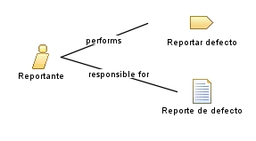

| Role: Reportante |
 |
|
Relationships
 |
||
| Primary Performs | ||
|---|---|---|
| Additionally Performs | ||
| Modifies |
|
|
| Process Usage | ||
Main Description
El Reportante es quien detecta un comportamiento incorrecto del producto y lo comunica al equipo. Puede ser un usuario, un tester o un miembro del equipo de desarrollo, ya que en SPEM un rol representa un conjunto de responsabilidades y no a una persona específica. Responsabilidades
|
Staffing
| Skills | capacidad de observación y de redactar descripciones claras. |
|---|